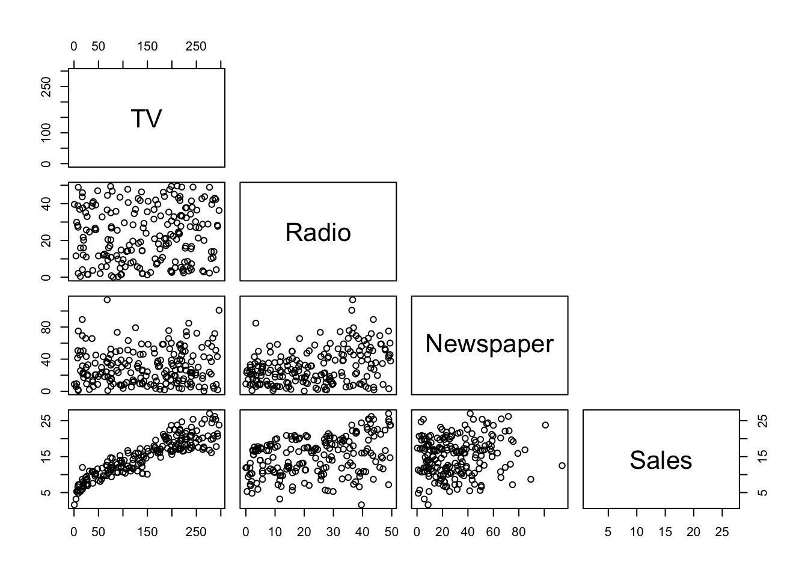

Machine Learning is a realm filled with diverse algorithms and offers powerful tools for understanding relationships between variables and making predictions. Two fundamental tchniques for regression tasks are linear regression and non-linear regression. In this blog, we will embark on a journry to explore concepts, applications, and implementations of both linear and non-linear regression.
Linear Regression
Linear regression is a straightforward yet powerful method for modeling the relationship between a dependent variable (\(y\)) and one or more independent variables (\(x\)). The relationship is assumed to be linear, meaning that a change in the independent variable(s) results in a proportional change in the dependent variable.
Simple Linear Regression (SLR)
In SLR, there is only one independent variable. The relationship can be expressed as:
\[y = \beta_0 + \beta_1 . x + \epsilon\]
Where:
\(y\) is the dependent variable
\(x\) is the independent variable
\(\beta_0\) is the intercept
\(\beta_1\) is the slope
\(\epsilon\) is the error term
Multiple Linear Regression
When there are multiple independent variables, the equation becomes:
Non-linear regression allows for more complex relationships between variables by using non-linear functions to model the data. This is particularly useful when the linear assumptions of relationships breaks down.
Polynomial Regression
Non-linear regression is a form of non-linear regression where the relationship between variables is modeled as an n-th degree polynomial. For a quadratic polynomial:
When the relationship between variables follows an exponential or logarithmic pattern, non-linear regression can capture these relationships effectively.
An important aspect of regression problems is deciding the target and predictors. This does vary based on the problem at hand or the research questions one is trying to answer. With this data, let’s say we want to use Sales as the Target variable and TV, Radio, Newspaper as Predictors.
Looking at the scatter plot matrix between each fields in the dataset.
pairs(data, upper.panel =NULL)

Scatter plots help get sense of correlation between field, which is an important metric for regression. We can see that that TV and Radio, and TV and Newspaper have low correlations. We can also observe that there is a high correlation between TV and Sales, Radio and Sales and Newspaper and Sales.
Splitting Dataset and Modeling
Next, we split that dataset into train and test splits. We use the training set first to fit the model and then use the testing set to check the performance of the obtained model. We will randomly split the data here.
Call:
lm(formula = Sales ~ Newspaper, data = train)
Residuals:
Min 1Q Median 3Q Max
-12.5497 -3.8956 0.6684 3.7927 11.4179
Coefficients:
Estimate Std. Error t value Pr(>|t|)
(Intercept) 13.75564 0.73181 18.797 <2e-16 ***
Newspaper 0.04530 0.01947 2.326 0.0214 *
---
Signif. codes: 0 '***' 0.001 '**' 0.01 '*' 0.05 '.' 0.1 ' ' 1
Residual standard error: 5.26 on 149 degrees of freedom
Multiple R-squared: 0.03504, Adjusted R-squared: 0.02857
F-statistic: 5.411 on 1 and 149 DF, p-value: 0.02136
The first model, with TV as the predictor, explains approximately 80% of variablity of the target with a residual standard error of 2.39. The second model, with Radio as the predictor, explains 15% of variability of the target with an error of 4.93%. The third model, with Newspaper as the predictor, explains 3% of variability of the target with an error of 5.26%.
Clearly, TV as a predictor is explaining more variability of target. However, using a single plot means we might completely neglec the effect of the other two predictors on Sales.
Fitting Multiple Linear Regression
There are multiple methods to extend a simple linear regression. But since, we have only three predictors to work with, we will use a Forward Selection Method to explore more models.
Since, TV as a predictor explained most variability(80%) earlier, we can add Radio as the two predictors.
mlr1 <-lm(Sales ~ TV + Radio, data=train)summary(mlr1)
Call:
lm(formula = Sales ~ TV + Radio, data = train)
Residuals:
Min 1Q Median 3Q Max
-7.4365 -0.8185 -0.0393 0.8595 3.7890
Coefficients:
Estimate Std. Error t value Pr(>|t|)
(Intercept) 4.585300 0.341251 13.44 <2e-16 ***
TV 0.054150 0.001658 32.66 <2e-16 ***
Radio 0.111447 0.009508 11.72 <2e-16 ***
---
Signif. codes: 0 '***' 0.001 '**' 0.01 '*' 0.05 '.' 0.1 ' ' 1
Residual standard error: 1.727 on 148 degrees of freedom
Multiple R-squared: 0.8966, Adjusted R-squared: 0.8952
F-statistic: 641.8 on 2 and 148 DF, p-value: < 2.2e-16
We can notice that the Adjusted R2 has improved to 89%. Having said that, we need to check that the imporovement is statistically significant. For this, we will use Analysis of Variance (ANOVA) to test the null hypothesis - H0: The improvement is not significantly significant and H1 - The improvement is statisitically significant.
anova(slr1, mlr1)
Analysis of Variance Table
Model 1: Sales ~ TV
Model 2: Sales ~ TV + Radio
Res.Df RSS Df Sum of Sq F Pr(>F)
1 149 851.61
2 148 441.63 1 409.98 137.39 < 2.2e-16 ***
---
Signif. codes: 0 '***' 0.001 '**' 0.01 '*' 0.05 '.' 0.1 ' ' 1
The p-value is significantly less than 0.05, and therefore we have sufficient evidence to reject the null hypothesis and accept the alternative.
We can try to extend the model further with using Newspaper as a third predictor.
mlr2 <-lm(Sales ~ TV + Radio + Newspaper, data=train)summary(mlr2)
Call:
lm(formula = Sales ~ TV + Radio + Newspaper, data = train)
Residuals:
Min 1Q Median 3Q Max
-7.4167 -0.8112 -0.0623 0.8476 3.7868
Coefficients:
Estimate Std. Error t value Pr(>|t|)
(Intercept) 4.5730056 0.3618831 12.637 <2e-16 ***
TV 0.0541379 0.0016672 32.472 <2e-16 ***
Radio 0.1110996 0.0100967 11.004 <2e-16 ***
Newspaper 0.0007159 0.0068211 0.105 0.917
---
Signif. codes: 0 '***' 0.001 '**' 0.01 '*' 0.05 '.' 0.1 ' ' 1
Residual standard error: 1.733 on 147 degrees of freedom
Multiple R-squared: 0.8966, Adjusted R-squared: 0.8945
F-statistic: 425 on 3 and 147 DF, p-value: < 2.2e-16
Looking at the p-value for Newspaper as a predictor, it deems not statistically significant (0.917 > 0.05). Adjusted R2 changed from 89.52 to 89.45. For these reasons, we have evidence to not include Newspaper as a predictor in the model.
Fitting Orthogonal Polynomial Regression
All the assumptions of Multiple Linear Regression were checked and the conclusion was that variance is constant. One last possibility is to check if there is any non-linear relationship between the target and predictors. From the scatter plot, we looked at the beginning, we have noticed that there is some type of curvilinear relationship. For this, we will be using a Polynomial Regression. We will look at specifically Orthogonal Polynomial Regression between Sales and predictors TV and Radio. We already know that Newspaper is not a statistically significant predictor, so we won’t be using Newspaper as a predictor for the non-linear regression.
As seen in the last line of output, this model is statistically significant since p-value <<< 0.5. All the coefficients are statistically significant since all p-value are <<< 0.5. This second order orthogonal polynomial model explains 93.08% variability of target that is a better indication with respect to the multiple linear regression model with TV and Radio as predictor. The Residual standard error for the model is 1.404.
anova(mlr1, opr1)
Analysis of Variance Table
Model 1: Sales ~ TV + Radio
Model 2: Sales ~ poly(TV, 2) + poly(Radio, 2) + TV:Radio
Res.Df RSS Df Sum of Sq F Pr(>F)
1 148 441.63
2 145 285.85 3 155.78 26.34 1.168e-13 ***
---
Signif. codes: 0 '***' 0.001 '**' 0.01 '*' 0.05 '.' 0.1 ' ' 1
Since the p-value for testing the null hypothesis (\(1.168e-13\)) is significantly less than 0.05, hence we have sufficient evidence to reject the null hypothesis and accept the alternative. Therefore, the improvement in the Adjusteed R2 is statistically significant. To have bases covered, we will also try fitting a third order orthogonal polynomial regression.
It is clear from the results above that third order of TV predictor is not statistically significant (p-value > 0.05). Hence, we won’t include this in the model. Hence, the fit is -
Score Test for Heteroskedasticity
---------------------------------
Ho: Variance is homogenous
Ha: Variance is not homogenous
Variables: fitted values of Sales
Test Summary
----------------------------
DF = 1
Chi2 = 1.497247
Prob > Chi2 = 0.2210954
prediction <- opr3 %>%predict(test)## Cheking performance by calculating R2, RMSE, and MAEdata.frame( R2 =R2(prediction, test$Sales), RMSE =RMSE(prediction, test$Sales),MAE =MAE(prediction, test$Sales))
R2 RMSE MAE
1 0.9395374 1.264048 0.9417405
The R2 we obtain seems like a decent fit, however this result is based on one test data set. Hence, we cannot be certain that the model will perform better on unseen data. Therefore, we will use K-fold cross validation to test the performance of model on a different test data set.
Linear Regression
199 samples
2 predictor
No pre-processing
Resampling: Cross-Validated (10 fold, repeated 3 times)
Summary of sample sizes: 179, 179, 179, 179, 180, 178, ...
Resampling results:
RMSE Rsquared MAE
1.298474 0.9392671 0.9752946
Tuning parameter 'intercept' was held constant at a value of TRUE
This model captures almost 94% variability available in the target on average. Therefore, we can say that this is still a decent fit.
To summarize, we looked at Simple Linear Regression and expanded those to Multiple Linear Regression to find a better fit. To cover all bases, we also tried to fit a polynomial regression model. Ultimately, we found a better fit by comparing variability and p-values. In conclusion, linear and non-linear regression stand as pillars for modeling relationships and making predictions. Understanding when to choose one over the other and how to interpret the results is essential.